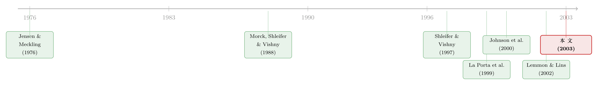

亏了十年，钱去哪了？——危机之前，韩国公司治理的一笔暗账
本文读的是 Joh (2003, Journal of Financial Economics)：用危机爆发前 1993–1997 年 5,829 家韩国公司的数据，作者发现——在一个孱弱的治理体系下，控股股东「控制权」远超「所有权」的公司，盈利能力系统性地更低；当一家集团公司把资源转给关联企业时，这些钱常常被白白浪费掉，也就是所谓的「掏空（tunneling）」。关键在于，这一切发生在危机之前，而不是被危机「打」出来的。
1 一个让人不安的事实
先讲一个数字。1997 年，韩国企业的平均资产负债率（debt-equity ratio）是 396%——同年美国是 154%，日本 193%，台湾只有 86%。一家高杠杆的公司，本该在股东权益上挣出高回报来补偿风险。可韩国的情况恰恰相反：在危机前差不多 10 年里，企业的平均股本回报率（return on equity）长期低于它们的借款利率。
这是什么意思？意思是，把钱借来、再投下去，赚到的还不够付利息。资本的回报，长期低于它的机会成本。
于是一个很自然、却让人不安的问题就浮出来了：如果一个国家的公司，集体地、年复一年地把资本浪费在不赚钱的项目上，那么钱到底去哪了？谁在做这个决定，又凭什么一直这么做下去？
过去大量的研究，盯着的是危机期间发生了什么。比如 Johnson 等人（2000）发现，法律保护弱的国家在危机里汇率贬得更狠、股市跌得更惨；Mitton（2002）发现披露质量高、所有权集中的公司在危机中市值表现更好；Lemmon 和 Lins（2002）发现控股股东「控制权多于所有权」的公司，在危机里估值跌得更厉害。
但这篇论文反过来问：危机之前呢？如果糟糕的治理在风暴来临之前，就已经悄悄地、持续地侵蚀着企业的价值和财务存活能力，那它其实是在为整个经济体的脆弱性「充值」。Aghion 等人（2000）和 Krugman（1999）都论证过，正是企业的财务困境帮着点燃了这场危机。换句话说，危机不是凭空降临的，它的引信，可能早就埋在那张难看的资产负债表里了。
2 控制权与所有权的那道缝
这篇文章反复盯着的，其实只有一件事：控制权与所有权之间的那道缝（control-ownership disparity）。把这道缝理解透了，整篇论文就通了。
设想一个控股股东，他手里只握着公司 10% 的现金流权（cash flow rights，即真正属于他的那部分利润索取权），却通过种种安排牢牢掌握着这家公司的决策权。那么，当他从公司里「拿走」一块钱时，作为股东他只损失一毛，而作为控制者他能独吞这一整块——私人收益远大于私人成本。Jensen 和 Meckling（1976）早就指出，这种侵占的冲动会随着控股股东持股比例的下降而上升。Bebchuck、Kraakman 和 Triantis（1999）给这种结构起了个名字：控制性少数股权结构（controlling minority structure）。LLSV（2002）则发现，这种结构在全世界比比皆是。
那么韩国的「缝」有多大？
论文的描述性统计（如表 1 所示）给出了一组很有冲击力的数字。一家上市公司的最大股东及其家族，平均只持有 31.7% 的股份（按资产加权更是不到 13%）；而非上市公司控股股东平均持股 49.5%。集团（chaebol，财阀）关联企业的控股股东平均持股 29.2%，最大的 70 家财阀关联企业更低，只有 17.1%（资产加权后仅 9.9%）。
可是别忘了——这只是「所有权」。真正的「控制权」要大得多。靠着交叉持股、金字塔结构、循环持股，再加上「影子投票（shadow voting）」让金融机构不能投票、强制要约收购又把外来者挡在门外，控股股东实际能调动的投票权，整体上达到了 32.5%，在最大的 70 家财阀里超过了 43.5%。
这道「缝」越大，控股股东的算盘就越好打：他用很少的真金白银，撬动了远超比例的话语权；侵占的好处归他独享，成本却由全体小股东分摊。论文的核心假说就是一句话——缝越大的公司，盈利能力越差。
3 为什么是韩国，又为什么用「盈利能力」
到这里，一个老练的读者会立刻警觉：所有权结构和公司业绩之间，向来是出了名的内生（endogenous）。是「治理差导致业绩差」，还是「业绩差的公司恰好治理也差」？跨国研究尤其麻烦，因为各国的法律制度本身就在塑造所有权结构（LLSV, 1997, 2000, 2002；La Porta, Lopez-de-Silanes, Shleifer, 1999），你很难把「制度」和「所有权」干净地分开。
作者的应对，是只看一个国家。一国之内，所有公司面对的是同一套法律、同一套会计准则、同一个宏观与发展阶段。这样一来，「制度环境」这个变量被天然地控制住了，所有权结构与制度之间的内生性也就被回避掉了。这是一种用「样本同质性」换「识别干净」的策略——放弃跨国变异，换来一个几乎不受制度差异污染的横截面时间序列（cross-sectional, time-series）样本。
而且韩国是个近乎完美的案例。它的法律明文保护在位的控股股东：1994 年前只有现有控股股东能持股超过 10%；外资个人持股不得超过 7%、外资整体不得超过 26%；任何人收购到 25% 就必须对至少 50% 的股份发出要约；敌意收购和外资收购直到 1998 年都被禁止。一句话——外部治理的几乎所有阀门都被法律拧死了，控股股东可以用很小的股份安稳地掌权。这正是观察「治理失灵」后果的天然实验室。
那为什么用会计盈利能力而不是托宾 Q 或股票回报来衡量业绩？作者给了三条理由：第一，即便最发达的市场都有无效率（De Bondt 和 Thaler, 1985；Lo 和 MacKinlay, 1988），韩国这样的新兴市场股价更难反映全部信息；第二，Mossman 等人（1998）表明会计盈利比市值更直接地关系到企业的财务存活；第三——也是最实际的——会计指标让我们能同时评估上市公司和非上市公司，而后者根本没有股价。这一点在后面会成为本文一个关键的对照组。
4 真正关键的一步：把「掏空」抓个现行
如果文章只停在「缝大→业绩差」，那它充其量是 LLSV 的一个韩国脚注。真正关键的一步在于：作者要指认出资源被浪费的那条具体通道——对关联企业的投资。
业务集团（business group）在新兴市场之所以流行，本有它的好处：Leff（1978）说它能攫取稀缺要素的准租，Khanna 和 Palepu（2000）甚至论证多元化集团在新兴市场里跑赢独立企业，因为它能搭建内部资本市场、降低交易成本。
但硬币的另一面是：Lamont（1997）、Shin 和 Stulz（1998）、Scharfstein 和 Stein（2000）一系列研究指出，多元化集团的内部资本市场常常是低效的——它们在弱的部门里过度投资，在强的部门里投资不足。更糟的是，当控股股东对各子公司的持股比例参差不齐时，他完全有动机把资源从「自己持股少」的子公司，挪到「自己持股多」的子公司去。这就是 Johnson 等人（2000）所说的「掏空」：通过关联交易、自我交易、子公司之间的资产转移，把小股东的钱搬进自己的口袋。（关于如何在缺乏法律约束时直接量出大股东能拿走几成，可参见《拍卖桌上量出来的「掏空」》。）
于是反转出现了。论文的结果显示：独立企业的盈利能力，高于隶属大型财阀的企业；而当集团把资源转移给关联企业时，这种转移拉低了企业盈利——这正是「掏空发生了」的直接证据。换句话说，Khanna 和 Palepu（2000）所说的「集团溢价」在这里不见了，取而代之的是「集团折价」。作者由此提出一个很有意思的论断：随着经济进一步发展，业务集团的优势在消退，而它的劣势在膨胀。（关于业务集团结构如何反过来影响估值，亦可参见《被「保护」起来的核心公司，为什么反而更便宜？》。）
而最后那记重锤，落在上市与非上市的对照上：控制权—所有权落差的负面效应、以及内部资本市场低效的负面效应，在上市公司里比在非上市公司里更强。这有点反直觉——上市公司不是受到更多监管、更多披露、更多分析师盯着吗？但恰恰因为上市公司的控股股东持股更低（前面说了，上市公司平均才 31.7%，资产加权不到 13%），那道「缝」更宽，侵占的杠杆也就更大。监管的「明」，没能盖过股权结构的「暗」。
5 主要发现
把零散的线索收拢，论文的几条主要结论是这样的（注：作者用的是连续的控制权与所有权变量，而非简单的虚拟变量，并控制了公司、行业与宏观经济效应）：
- 所有权集中度越低，盈利能力越低。 控股家族持股越少，公司越不赚钱——即便他们的持股本身就已经很小。
- 控制权—所有权落差越大，盈利能力越低。 这道「缝」是核心解释变量。表 1 给出的落差本身就很可观：上市公司平均
15.2%，非上市公司22.8%，集团关联企业32.5%，最大的 70 家财阀关联企业高达43.5%。 - 所有权效应存在非线性。 这与 Morck、Shleifer 和 Vishny（1988）的经典发现一脉相承——持股与业绩的关系并非单调。
- 独立企业 > 大型财阀关联企业。 资源向关联企业的转移会进一步拉低盈利，「掏空」留下了指纹。
- 以上负面效应在上市公司中更强。
这些结果和 Lemmon、Lins（2002）形成了鲜明对照：后者发现，在东亚国家，所有权结构在危机前对托宾 Q 的变化没有显著影响。作者认为差异来自方法——本文用了更灵敏的财务困境探测器（会计盈利能力）、控制了更多国别特定因素与公司行业特征、用的是纵向（longitudinal）数据、并用连续变量替代了虚拟变量。（关于用危机本身作为「显影液」把治理从内生性里冲洗出来的另一种思路，可参见《危机是一台显影液：把「公司治理」从内生性里冲洗出来》。）
至于那条长达十年的低盈利曲线本身，作者借 Krueger 和 Yoo（2001）指出：韩国制造业的资产回报率长期低于日本、德国、美国和台湾——慢性的低盈利，意味着资本平均而言被浪费在了不赚钱的项目上。而内外两套治理机制，都没能给这种浪费踩下刹车。
6 文献脉络
把镜头拉远，这篇论文站在一条清晰的研究河流之中。
源头是 Jensen 和 Meckling（1976）的代理理论：所有权与控制权一旦分离，冲突就此埋下。接着 Morck、Shleifer 和 Vishny（1988）用实证把「管理层持股—公司价值」的非单调关系钉在了纸面上。然后 Shleifer 和 Vishny（1997）的那篇著名综述，把「投资者保护」推到了公司治理的中心。
真正把这条线推向「法与金融」的，是 La Porta、Lopez-de-Silanes、Shleifer（1999）对全球所有权结构的测绘，以及 LLSV（1997, 2000, 2002）的一系列工作——他们论证法律制度解释了各国所有权差异的大半。与此同时，Bebchuck 等人（1999）提出「控制性少数股权结构」、Johnson 等人（2000）提出「掏空」、Claessens 等人（2000）刻画了东亚的所有权与控制权分离，把「大股东如何侵占小股东」这件事讲得越来越具体。

到了 2002 年，Lemmon 和 Lins、Mitton 借东亚危机这个外生冲击，检验治理在危机中的作用。而本文（Joh, 2003）的位置，恰恰是把时间轴往前拨——它问的是：在风暴来临之前，这套糟糕的治理已经造成了多大的损失？它用一国之内的同质样本、连续的控制—所有权变量、以及会计盈利这把更灵敏的尺子，给出了一个肯定的答案。
7 评论与延伸（Q&A + 研究方向）
(a) 几个可能的疑问
Q：单看一个国家，不就放弃了所有跨国变异、损失了外部有效性吗？
是的，这是一笔明摆着的交换。作者用「样本同质性」换「识别干净」：一国之内法律、会计准则、宏观阶段都相同，所有权与制度的内生性被天然控制住。代价是结论的外推性——韩国财阀这套交叉持股、影子投票、强制要约的制度组合相当特殊，未必能直接搬到别国。但对「危机前治理是否已在伤害企业」这个具体问题，这种设计反而比跨国回归更有说服力。
Q：盈利能力低，会不会是因果倒置——业绩差的公司恰好股权也分散？
这正是本文最大的软肋。横截面相关并不等于因果。作者的辩护是：控制了公司、行业、宏观效应，又用了纵向数据；而且法律外生地压低了控制所需的持股门槛（如
25%强制要约、外资上限），使得「缝」的大小部分由制度而非业绩决定。但严格说，这仍是一个关联性证据，缺一个真正外生的所有权冲击来钉死因果。
Q：用会计盈利而不是托宾 Q，会不会被盈余管理（earnings management）污染？
有这个风险，而且方向可能恰好不利于作者——侵占严重的公司更有动机粉饰报表，从而高估其真实盈利。若真如此，本文测到的负向效应其实是被低估的下界，结论会更强而非更弱。作者也强调只用经过外部审计的公司来压低这种噪声。
Q：为什么负面效应在上市公司里反而更强？这不反直觉吗？
关键在于「缝」的宽度，而非监管的有无。上市公司控股股东平均只持股
31.7%（资产加权不到13%），落差远大于持股49.5%的非上市公司。落差越大，用小钱撬动大权、侵占的杠杆就越高。披露和监管的「明」，没能压过股权结构的「暗」。
Q：这和 Khanna、Palepu（2000）「集团在新兴市场跑赢」的结论矛盾吗？
表面矛盾，实则互补。作者的解释是：集团的优势（内部资本市场、降低交易成本）在欠发达阶段确实存在，但随着产品市场竞争和外部资本市场的发育，这些优势消退，而掏空、内部资本市场低效这些劣势凸显。两篇文章可能描述的是同一事物在不同发展阶段的两副面孔。
Q：危机前的低盈利，凭什么说是治理问题，而不是单纯的宏观或产业周期？
作者的回应是：低盈利持续了近
10年，并非 1996–1997 的突然下滑；且控制了公司、行业、宏观因素后，盈利仍在系统性地随「控制—所有权落差」变化。换言之，是横截面上的治理变量、而非时间序列上的宏观冲击，在解释谁更差。
(b) 几个可能的研究问题与提案
1. 把「掏空」搬到债券市场：控制—所有权落差是否被信用利差定价？
【经济故事】如果控股股东会掏空小股东，债权人理应同样警觉——掏空既损害偿债资源，也加剧道德风险。那么落差大的公司，其债券利差是否系统性更高？【可行性】中。需要把所有权数据（如本文的 NICE、或东亚的 Claessens et al. 口径）与债券二级市场利差对接，新兴市场债券流动性和定价数据是主要瓶颈，但在韩国、印度等有一定公司债市场的国家可行。
2. 外资准入放开作为外生冲击：当 1998 年外资上限被取消，落差大的公司业绩如何变化？
【经济故事】本文最大的识别短板是缺乏外生的治理冲击。1997 年底韩国取消外资
7%/26%上限、开放敌意与外资收购，恰好提供了一个准自然实验：外部治理阀门被打开后，原先落差最大的公司是否盈利改善最多？【可行性】高。可用双重差分（difference-in-differences, DiD），以「危机前控制—所有权落差」为处理强度，对比放开前后盈利与估值的变化。数据上本文样本天然延展即可，识别比纯横截面干净得多。（与外资作为治理力量的关联，可参见《外资真是「蝗虫」吗？》。）
3. 直接量化集团内部的资源转移路径。
【经济故事】本文从盈利下降「反推」掏空，但没有直接画出资金在子公司之间的流向。若能用关联交易、内部贷款、担保数据直接刻画「从持股少的子公司流向持股多的子公司」，就能把掏空从「黑箱」变成「明账」。【可行性】中。需要细粒度的关联交易披露，韩国公平交易委员会（KFTC）对财阀的内部交易申报数据是理想来源，但获取与清洗成本高。
4. 上市/非上市对照的再检验：信息环境 vs. 股权结构，谁主导侵占？
【经济故事】本文发现上市公司侵占效应更强，归因于「缝更宽」。但上市同时意味着更强的信息环境。能否把「股权落差」与「信息透明度」两个渠道分开，看哪一个真正驱动了上市/非上市差异？【可行性】中。需要构造透明度的代理变量（披露评分、分析师覆盖），并在控制落差后做交互检验，识别上靠横截面变异，结论会带一定推测性。
参考文献
- Bebchuck, L., Kraakman, R., Triantis, G. (1999). Stock Pyramids, Cross-Ownership, and Dual Class Equity: The Creation and Agency Costs of Separating Control from Cash Flow Rights. Discussion Paper #249, Harvard Law School.
- Claessens, S., Djankov, S., Lang, L. (2000). The separation of ownership and control in East Asian corporations. Journal of Financial Economics 58, 81–112.
- Jensen, M., Meckling, W. (1976). Theory of the firm: managerial behavior, agency costs, and ownership structure. Journal of Financial Economics 3, 305–360.
- Joh, S. W. (2003). Corporate governance and firm profitability: evidence from Korea before the economic crisis. Journal of Financial Economics 68(2), 287–322.
- Johnson, S., Boone, P., Breach, A., Friedman, E. (2000). Corporate governance in the Asian financial crisis. Journal of Financial Economics 58, 141–186.
- Johnson, S., La Porta, R., Lopez-de-Silanes, F., Shleifer, A. (2000). Tunneling. American Economic Review Papers and Proceedings 90, 22–27.
- Khanna, T., Palepu, K. (2000). Is group affiliation profitable in emerging markets? An analysis of diversified Indian business groups. Journal of Finance 55, 867–891.
- La Porta, R., Lopez-de-Silanes, F., Shleifer, A. (1999). Corporate ownership around the world. Journal of Finance 54, 471–517.
- La Porta, R., Lopez-de-Silanes, F., Shleifer, A., Vishny, R. (2002). Investor protection and corporate valuation. Journal of Finance 57, 1147–1170.
- Lemmon, M., Lins, K. (2002). Ownership structure, corporate governance, and firm value: evidence from the East Asian financial crisis. Journal of Finance, forthcoming.
- Mitton, T. (2002). A cross-firm analysis of the impact of corporate governance on the East Asian financial crisis. Journal of Financial Economics 64, 215–241.
- Morck, R., Shleifer, A., Vishny, R. (1988). Management ownership and market valuation: an empirical analysis. Journal of Financial Economics 20, 293–315.
- Scharfstein, D., Stein, J. (2000). The dark side of internal capital markets: divisional rent seeking and inefficient investment. Journal of Finance 55, 2537–2564.
- Shleifer, A., Vishny, R. (1997). A survey of corporate governance. Journal of Finance 52, 737–783.